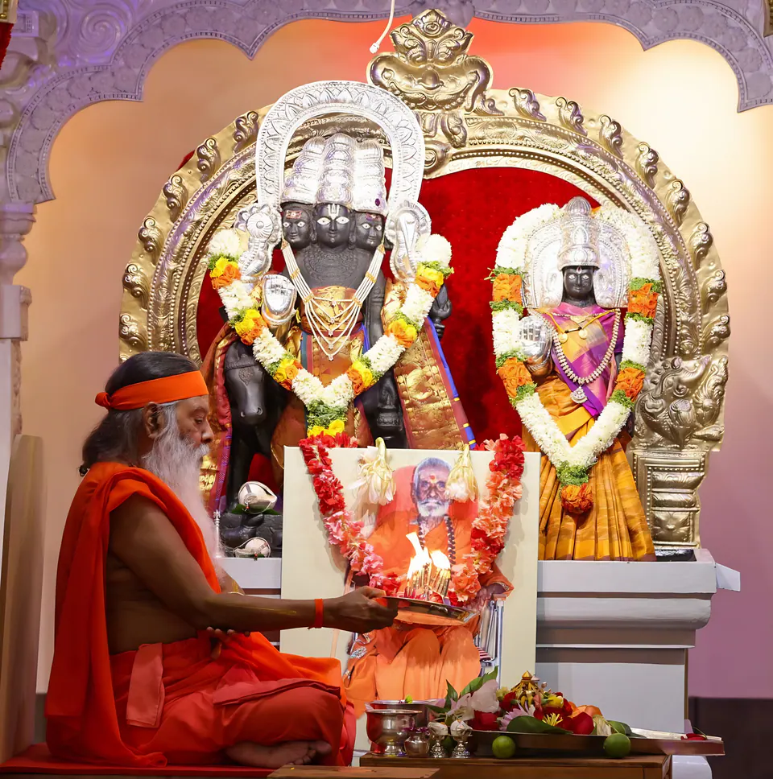
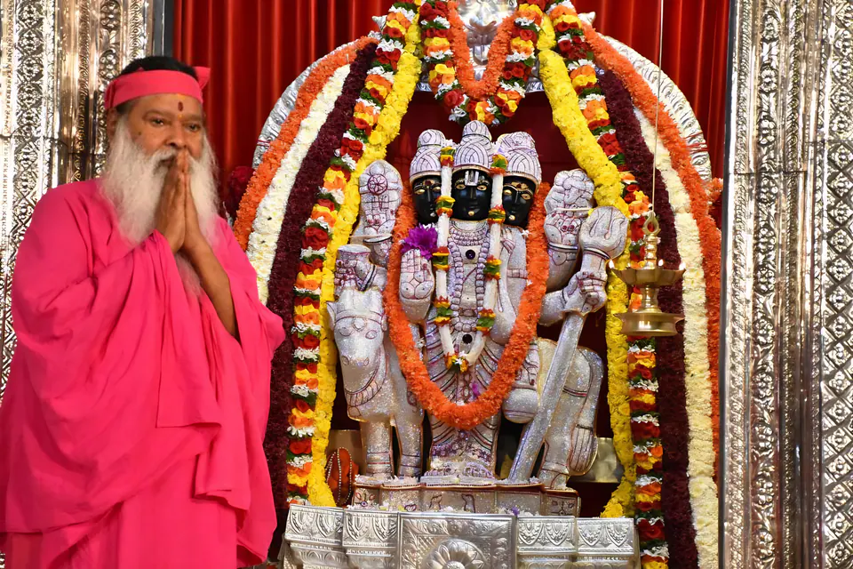

గురు పరంపర
ఆది గురు దత్తాత్రేయ స్వామి నుంచి శ్రీపాద వల్లభ, నరసింహ సరస్వతుల ద్వారా మన ప్రస్తుత గురువులైన శ్రీ స్వామీజీ వారి వరకు నిరంతరంగా కొనసాగే గురువుల పరంపర.
గురు పరంపర అంటే ఏమిటి?
“గురు పరంపర” అనేది గురు, పరంపర అనే రెండు పదాల కలయిక. పరమశివుడు, పార్వతీ దేవిల సంవాదమైన పవిత్ర గ్రంథం గురు గీత ప్రకారం, “గురు” అనే పదంలో “గు”, “రు” అనే రెండు పదాలు ఉన్నాయి.
“గు” చీకటిని (అజ్ఞానాన్ని) సూచిస్తుంది
“రు” వెలుగును సూచిస్తుంది
“పరంపర” అంటే “అవిచ్ఛిన్నమైన వారసత్వ క్రమం”. కాబట్టి, గురు పరంపర అంటే గురువుల నిరంతర వారసత్వం లేదా వంశక్రమం.
గురువు అంటే అచ్చంగా ఆ సూర్యుని వంటివారు; అజ్ఞానం అనే చీకటిని పూర్తిగా మింగివేసి, వెలుగును ప్రసాదించి, మనలను ఆశీర్వదించేది వారే.
గురువుకు సమానులు ఎవరూ లేరు
గురువు దివ్య, ఆధ్యాత్మిక జ్ఞానానికి సాక్షాత్ స్వరూపమని అన్ని శాస్త్రాలు నొక్కి చెబుతున్నాయి. ఆధ్యాత్మిక సోపానంలో ముందుకు సాగడానికి ప్రతి సాధకుడికీ గురువు మార్గదర్శనం అవసరం.
గురు పరంపరకు ప్రార్థనలు సమర్పించడం కేవలం ఆచారం మాత్రమే కాదు, సాధకుని ప్రాథమిక కర్తవ్యం కూడా; ఎందుకంటే గురువుకు సమానులు గానీ, వారంత సర్వోన్నతులు గానీ ఎవరూ లేరు. దివ్య జ్ఞానాన్ని అనుగ్రహించిన గురు పరంపరకు కృతజ్ఞత తెలుపుకోవడానికే గురువుకు ప్రార్థన, పూజ చేస్తారు. ఇలా చేయడం ద్వారా పరమాత్మ జ్ఞానం అనుగ్రహించబడుతుంది.
మనసులోని బాధలను తొలగించుకోవడానికి, ఆధ్యాత్మిక సోపానాన్ని అధిరోహించడానికి, దేహధారియైన గురువును ఆశ్రయించి, శ్రద్ధాభక్తులతో వారిని సేవించి, తద్వారా పాపాలు, మలినాల నుంచి తనను తాను శుద్ధి చేసుకోవడం తప్పనిసరి.
ఏ పని ప్రారంభించే ముందు, పూర్తయిన తరువాత కూడా గురువును ప్రార్థించాలి. గురువు లేకుండా లక్ష్యాన్ని చేరుకోలేము.
గురు గీత
గుకారస్స్యాద్ గుణాతీతో రూపాతీతో రుకారకః
గుఈ సందర్భంలో “గు” అంటే వారు అన్ని లక్షణాలకు (గుణాలు) అతీతులని అర్థం.
రు“రు” అంటే వారు ఆకారానికి (రూపం) అతీతులని అర్థం.
గుణాలకు, రూపానికి అతీతులైన పరమ ప్రభువు వారు కాబట్టి, వారిని గురువు అని సంబోధించారు.

శ్రీ దత్తాత్రేయ స్వామి
బ్రహ్మ సంకల్పం మేరకు, క్రియా యుగంలో (పీఠం వారి పదకోశం ప్రకారం కృతయుగం, యుగాలలో మొదటిది) అత్రి మహర్షి, అనసూయల మహాతపస్సు ఫలితంగా, త్రిమూర్తులైన బ్రహ్మ, విష్ణువు, శివుల అంశలన్నింటినీ కలిగి దత్తాత్రేయ స్వామి వారు తమ భక్తుల కోసం అవతరించారు.
“దత్త” అంటే తనను తాను సమర్పించుకున్నవారు అని అర్థం; అత్రి మహర్షికి జన్మించినందున వారు శ్రీ దత్తాత్రేయ స్వామిగా ప్రసిద్ధి చెందారు. దివ్య జ్ఞానాన్ని ప్రోత్సహించి, ప్రచారం చేసిన అగ్రగణ్యులైన గురువు కాబట్టి దత్తాత్రేయ స్వామిని గురువులకే గురువు అంటారు. అందుకే వారిని “ఆది గురువు”గా కీర్తిస్తారు.
దత్త అవతారానికి ఒక విశిష్టత ఉంది: ఇతర అవతారాలు తమ తమ కార్యాలు పూర్తి కాగానే తమ మూల స్థానానికి తిరిగి వెళ్లిపోతాయి; కానీ దత్తాత్రేయ అవతారం గురుమూర్తిగా భూమిపై శాశ్వతంగా నిలిచి, నిత్య ప్రభావాన్ని చూపుతుంది.
జయ గురు దత్త — అవధూత దత్త పీఠం నినాదం, భక్తులు పరస్పరం పలకరించుకునే అభివాదం.
త్రిమూర్తుల స్వరూపం
దత్త ప్రభువుకు మూడు శిరస్సులు, ఆరు చేతులు ఉంటాయి; వారి చుట్టూ నాలుగు శునకాలు, వెనుక కామధేను (గోవు), కల్పవృక్షం (ఔదుంబర వృక్షం) ఉంటాయి. నాలుగు శునకాలు ఋగ్, యజుర్, సామ, అథర్వణ అనే నాలుగు వేదాలకు ప్రతీకలు; కామధేను, కల్పవృక్షం భక్తుల కోరికలు నెరవేర్చడాన్ని సూచిస్తాయి.
-
శివునిగా దత్త
శూలం & డమరుకం
ఒక చేతిలో అహంకారాన్ని సంహరించడానికి ఉద్దేశించిన శూలం (త్రిశూలం) ఉంటుంది. మరొక చేతిలో, అజ్ఞానం (అవివేకం) అనే నిద్రలో ఎల్లప్పుడూ మునిగి ఉన్న జనులను మేల్కొలపడానికి డమరుకం ఉంటుంది.
-
విష్ణువుగా దత్త
శంఖం & చక్రం
శంఖం ఆది నాదమైన ఓంకారానికి ప్రతీక — దానిని పూరించినప్పుడు అవిద్య (అజ్ఞానం) తొలగిపోతుంది. ఆది, అంతం లేని గుండ్రని వలయం వంటి చక్రం కర్మకు ప్రతీక.
-
బ్రహ్మగా దత్త
జపమాల & కమండలం
జపమాలలోని అనేక గుండ్రని పూసలు భగవంతుని అధీనంలో ఉన్న అసంఖ్యాక బ్రహ్మాండాలకు ప్రతీకలు. కమండలంలో (జలపాత్ర) ఉండేది సాధారణ నీరు కాదు; అది జ్ఞానామృతం.
శ్రీ దత్తాత్రేయ స్వామి వారి 24 గురువులు
శ్రీ దత్తాత్రేయ స్వామికి సంబంధించిన ప్రముఖ గాథలలో ఒకటి — వారు తమ శిష్యుడైన యదు మహారాజుకు ప్రకృతిలోని తమ ఇరవై నాలుగు గురువుల గురించి ఉపదేశించడం; ఆ గురువుల నుంచి వారు ఆధ్యాత్మికత, జీవితం గురించి గాఢమైన పాఠాలు నేర్చుకున్నారు.
పృథ్వి భూమి
జీవితాంతం ఓర్పుతో ఉండటం, ఇతరులకు మేలు చేయడం భూమాత నుంచి నేర్చుకోవచ్చు.
-
జీవితాంతం ఓర్పుతో ఉండటం, ఇతరులకు మేలు చేయడం భూమాత నుంచి నేర్చుకోవచ్చు.
-
గాలి నిస్సంగత్వం, నిర్మలత్వం అనే గుణాలకు ప్రతీక.
-
ఆకాశం సర్వవ్యాపకత్వానికి ప్రతీక; దేహాన్ని ఏర్పరచే భూతాలలో పుట్టే గుణాల వల్ల కళంకితం కాని ఆత్మను కూడా అది సూచిస్తుంది.
-
నీరు స్వచ్ఛత, మృదుత్వం, మాధుర్యాలకు ప్రతీక; కాబట్టి మనిషి నిర్మలమైన హృదయంతో, మధురమైన మాటలతో, సకల జీవుల పట్ల ప్రేమతో ఉండాలి.
-
అగ్ని అన్నింటినీ విచక్షణ లేకుండా దహించినా అపవిత్రం కాదు; అలాగే మనిషి జ్ఞానం కలిగి, తపస్వియై, కోరికలు లేనివాడై, ఇతరులు సమర్పించే వాటి వల్ల ప్రభావితం కాకుండా ఉండాలి.
-
వృద్ధి క్షయాలు చంద్రుని కాంతికి మాత్రమే; అలాగే ఆరు ఇంద్రియాల దోషాలు దేహానికి మాత్రమే, ఆత్మకు కాదు.
-
సూర్య కిరణాలు భూమి నుంచి నీటిని గ్రహించి, తగిన సమయంలో ఆ నీటిని తిరిగి భూమికి అందిస్తాయి. అలాగే మనిషి ఇంద్రియ విషయాలను ఎలాంటి ఆసక్తి లేకుండా స్వీకరించాలి.
-
పావురం మితిమీరిన అనుబంధం లేదా స్నేహం పెంచుకుని చివరకు దుఃఖంలో పడుతుంది. కాబట్టి, అనుబంధాలు మనిషి పతనానికి, విలువైన ఆయుష్షు వృథా కావడానికి దారితీస్తాయి.
-
కొండచిలువలా, నిద్రాహారాలను కూడా విడిచి, ఆత్మ పట్ల దృఢమైన నిష్ఠతో ఉండాలి.
-
సముద్రం తన ఉపరితలంపై చిన్న ఆకును కూడా నిలవనివ్వదు; అలాగే మనసులోకి అతి చిన్న కోరికను గానీ, కలతను గానీ ప్రవేశించనివ్వకూడదు. అంతేకాక, ఎన్నో నదులు సముద్రంలో కలిసినా అది పొంగిపొర్లదు. అలాగే కోరికలు నెరవేరినప్పుడు మితిమీరి సంతోషించకూడదు, నెరవేరనప్పుడు కుంగిపోకూడదు.
-
అగ్ని జ్వాలలకు భ్రమపడి, సుఖాన్ని అనుభవించవచ్చని ఆశించి శలభం జ్వాలల వైపు దూసుకెళ్లి కాలిపోతుంది. కాబట్టి మనిషి స్త్రీ ఆకర్షణకు గానీ, ఇంద్రియాల వల్ల కలిగే మోహానికి గానీ బలి కాకుండా జాగ్రత్తగా ఉండాలి.
-
తుమ్మెద దాదాపు ప్రతి పువ్వు నుంచి మకరందాన్ని సేకరిస్తుంది; అలాగే మనిషి అన్ని శాస్త్రాలను అధ్యయనం చేసి, నైపుణ్యంతో వాటి సారాన్ని గ్రహించి, ఆత్మాన్వేషణలో దానిని అన్వయించుకోవాలి.
-
ఏనుగు ఎంతో బలమైనదీ, తెలివైనదీ అయినప్పటికీ కామ వాంఛ వల్ల బంధింపబడుతుంది. అలాగే కామం ప్రమాదకరమని మనిషి తెలుసుకోవాలి.
-
తేనెటీగలు కూడబెట్టిన తేనెను తేనె దొంగ ఉపాయంతో దొంగిలిస్తాడు. అందువల్ల ఎవరైనా లోభియై, తన సంపదను తానూ అనుభవించకుండా, ఇతరులతో పంచుకోకుండా దాచిపెడితే, దానిని ఎవరో ఒకరు దోచుకునే ప్రమాదం ఉంది.
-
వేటగాని సంగీతానికి అమాయకమైన జింక కదలకుండా నిలబడి, కళ్లు మూసుకుని వింటుంది. ఋష్యశృంగ మహర్షి ఒక నర్తకి సంగీత నృత్యాలకు ఆకర్షితులై ఆమె వలలో పడ్డారు. అలాగే మనిషి సంగీతానికి గానీ, నృత్యానికి గానీ మోహితుడు కాకూడదు.
-
అదుపులేని నాలుక వల్ల చేప జాలరి గాలానికి చిక్కుతుంది. అందువల్ల నాలుకను అదుపులో ఉంచుకుని జయించడం ఎంతో ముఖ్యమని చేప బోధిస్తుంది.
-
పింగళ అనే వేశ్య ధనాశను, కామ సుఖాలపై కోరికను విడిచిపెట్టి అద్భుతమైన ప్రశాంతతను, మనశ్శాంతిని, గాఢ నిద్రను పొందింది. కాబట్టి కోరికే దుఃఖం; కోరికలు లేకపోవడమే పరమ సుఖం.
-
మాంసం ముక్కను పట్టుకున్న ఒక చిన్న పక్షిపై దానికంటే పెద్దదైన, బలమైన పక్షి దాడి చేస్తుంది. ఆ పక్షి మాంసాన్ని విడిచిపెట్టగానే, ఆ పెద్ద పక్షి మాంసం ముక్క కోసం దాని వెంట వెళ్తుంది. అలాగే ఇతరులు ఆశించే వస్తువును మన దగ్గర ఉంచుకుంటే తీవ్రమైన వేదనకు గురవుతాము; కాబట్టి అలాంటి వాటిని స్వచ్ఛందంగా విడిచిపెట్టడమే వివేకం.
-
చిన్న పిల్లవాడు ఏ చింతా లేకుండా, తనలో తాను ఆడుకుంటూ ఎల్లప్పుడూ ఆనందంగా ఉంటాడు. మనిషి కూడా పిల్లవాడిలా ఆనందంగా ఉండాలి.
-
ఒక కన్య వడ్లు దంచుతున్నప్పుడు ఆమె గాజులు గలగల శబ్దం చేస్తాయి. ఏ శబ్దమూ రాకుండా ఉండటానికి ఆమె ప్రతి చేతికి ఒక్క గాజును మాత్రమే ఉంచుకుంటుంది. అలాగే ఒకే చోట ఎక్కువ మంది చేరితే కలహాలు తలెత్తుతాయి.
-
బాణాలు చేసేవాడు బాణాల తయారీలో పరిపూర్ణ ఏకాగ్రతతో ఉంటాడు. అలాగే మనిషి సంపూర్ణ ఏకాగ్రతతో కూర్చుని యోగాభ్యాసం చేయాలి.
-
సర్పం ఎల్లప్పుడూ అప్రమత్తంగా ఉంటుంది, ఎన్నడూ ఏమరుపాటుగా ఉండదు. మనిషిలా కాకుండా, పాము గూడు కట్టుకోవడానికి సమయం వృథా చేయదు; చీమలు విడిచిపెట్టిన పుట్టలో హాయిగా నివసిస్తుంది.
-
సాలీడు తన కడుపులోని దారాలను బయటకు తీసి, ఆ పదార్థంతో గూడు అల్లి, దానితో ఆడుకుని, చివరకు దానిని మింగివేస్తుంది. సృష్టి ప్రక్రియ కూడా సాలీడు గూడు వంటిదే.
-
తూనీగను తదేకంగా చూసే కీటకం రూపం మారిపోయినట్లే, మనిషి కూడా ఎవరిపై మనసును పూర్తిగా లగ్నం చేస్తాడో వారి రూపాన్నే పొందుతాడు. ఒక చిన్న కీటకమే తన దేహాన్ని మార్చుకోగలిగితే, బుద్ధి, ధ్యాన ఏకాగ్రతా శక్తులు గల మనిషి తప్పకుండా ముక్తిని పొందగలడు.
విశ్వ సౌభ్రాతృత్వ సారం
శ్రీ దత్తాత్రేయ స్వామి వారి బోధనలు ప్రాపంచిక కోరికల నుంచి, అహంకారం నుంచి వైరాగ్యాన్ని ప్రోత్సహిస్తాయి. విశ్వ సౌభ్రాతృత్వ సారాన్ని వారు ఈ సరళమైన వాక్యాలలో ఉపదేశించారు:
గురువుల సువర్ణ సూత్రం
కాలక్రమంలో కాలం, ప్రదేశం, పరిస్థితులకు అనుగుణంగా దత్త ప్రభువు ఎన్నో రూపాలను ధరించి, తమ భక్తులను తమ స్థాయికి ఉద్ధరించారు. దత్తులు ధరించిన రూపాలు ఎన్నో ఎవరికీ తెలియదు; శ్రీపాద వల్లభ, నరసింహ సరస్వతి వంటి వారి అవతారాలు ఎంతో ప్రసిద్ధమైనవి.
శ్రీ గణేశాయ నమః । శ్రీ సరస్వత్యై నమః । శ్రీపాద వల్లభ నరసింహ సరస్వతి శ్రీ గురు దత్తాత్రేయాయ నమః ।
దత్త పీఠం గురు పరంపర ప్రార్థన సకల విఘ్నాలను తొలగించే శ్రీ గణపతికి నమస్కారంతో ప్రారంభమై, తరువాత జ్ఞాన దేవత అయిన సరస్వతీ మాతకు, అనంతరం శ్రీ దత్తాత్రేయ స్వామి అవతారాలైన శ్రీపాద వల్లభ, నరసింహ సరస్వతుల నుంచి ప్రస్తుత గురువు వరకు గల గురు పరంపరకు నమస్కారాలతో సాగుతుంది — ఆ ప్రస్తుత గురువు సాక్షాత్తూ శ్రీ స్వామీజీ వారే.
-
 కృతయుగంఅత్రి మహర్షి, అనసూయల తపస్సు ఫలంగాకృతయుగం ఆది గురువు · గురువులకే గురువు
కృతయుగంఅత్రి మహర్షి, అనసూయల తపస్సు ఫలంగాకృతయుగం ఆది గురువు · గురువులకే గురువుశ్రీ దత్తాత్రేయ స్వామి
దత్తాత్రేయ స్వామి త్రిమూర్తులైన బ్రహ్మ, విష్ణువు, శివుల అవతారమైన పరమ దైవం. దివ్య జ్ఞానాన్ని ప్రోత్సహించి, ప్రచారం చేసిన అగ్రగణ్యులైన గురువు కాబట్టి వారిని గురువులకే గురువు అంటారు.
శ్రీ దత్తాత్రేయ స్వామి (లేదా దత్త) తమ భక్తులను ఉద్ధరించడానికి మళ్లీ మళ్లీ ఎన్నో అవతారాలు ధరిస్తారు.
ఆది గురు దత్తాత్రేయ -
కలియుగం ప్రారంభమైనప్పుడు
భక్తులు తమను చేరుకోలేకపోతే వారు స్వయంగా భక్తుల వద్దకు వెళ్తారు; తమ ఉన్నత స్థాయికి ఎదగలేని వారి కోసం, వారి స్థాయికి దిగి వస్తారు.
-
 శ్రీ క్షేత్ర పిఠాపురంఆంధ్రప్రదేశ్, గోదావరి తూర్పు తీరంలోశ్రీ క్షేత్ర పిఠాపురం దత్త ప్రభువు తొలి అవతారం
శ్రీ క్షేత్ర పిఠాపురంఆంధ్రప్రదేశ్, గోదావరి తూర్పు తీరంలోశ్రీ క్షేత్ర పిఠాపురం దత్త ప్రభువు తొలి అవతారంశ్రీపాద వల్లభ
ఆ బాలుని పాదాలలో శంఖ, చక్ర చిహ్నాలు ఉండటంతో వారిని “శ్రీపాద” అని పిలిచారు. శ్రీ క్షేత్ర పిఠాపురంలో అప్పలరాజు, సుమతి అనే పుణ్య బ్రాహ్మణ దంపతులకు వారు జన్మించారు.
వారు కాశీ, బదరీనాథ్, కేదార్నాథ్లకు వెళ్లి సాధువులకు జ్ఞానాన్ని ఉపదేశించి, చివరకు కృష్ణా నదిలోని కురువపురం అనే ద్వీపానికి చేరి అక్కడే నివసించారు. వారి బోధనలు భక్తి, నిస్వార్థత, ఆత్మసాక్షాత్కారాల ప్రాముఖ్యాన్ని నొక్కి చెబుతాయి.
-
 కరంజామహారాష్ట్రకరంజా శ్రీ దత్తాత్రేయ స్వామి ద్వితీయ అవతారం
కరంజామహారాష్ట్రకరంజా శ్రీ దత్తాత్రేయ స్వామి ద్వితీయ అవతారంనరసింహ సరస్వతి
భారతదేశంలోని మహారాష్ట్రలో ఉన్న కరంజా గ్రామంలో మాధవ శర్మ, అంబా-భవాని కాలే అనే పుణ్య దంపతులకు నరసింహ సరస్వతి జన్మించారని విశ్వసిస్తారు.
మొదట నరహరి అని నామకరణం చేయగా, తరువాత వారు నరసింహ సరస్వతిగా ప్రసిద్ధి చెందారు; మానవుల పాపాలను, కష్టాలను తొలగించే వారి పాత్రకు ఈ పేరు ప్రతీక.
-
 సొగల, 1923రామనగర జిల్లా, కర్ణాటకసొగల, 1923 శ్రీ స్వామీజీ వారి మాతృమూర్తి, ప్రథమ గురువు
సొగల, 1923రామనగర జిల్లా, కర్ణాటకసొగల, 1923 శ్రీ స్వామీజీ వారి మాతృమూర్తి, ప్రథమ గురువుశ్రీ జయలక్ష్మీ మాత
శ్రీ జయలక్ష్మీ మాత శ్రీ స్వామీజీ వారి మాతృమూర్తి, ఆధ్యాత్మిక గురువు. బాల్యంలోనే శ్రీ స్వామీజీ వారికి ఆధ్యాత్మిక శిక్షణ ఇచ్చి, శ్రీ విద్య, రాజ యోగలను అనుగ్రహించి, వేదాలు, పురాణాలు, మహాభారతం, రామాయణం వంటి గ్రంథాల నిగూఢార్థాలను వివరించారు.
వారి జీవితం & బోధనలు -
 మేకెదాటు, 26 మే 1942కర్ణాటక, భారతదేశంమేకెదాటు, 26 మే 1942 శ్రీ గురువు · అవధూత దత్త పీఠాధిపతి
మేకెదాటు, 26 మే 1942కర్ణాటక, భారతదేశంమేకెదాటు, 26 మే 1942 శ్రీ గురువు · అవధూత దత్త పీఠాధిపతిశ్రీ గణపతి సచ్చిదానంద స్వామీజీ
గురు పరంపర ప్రార్థనలో భాగంగా, “శ్రీ గురువు” అయిన మన ప్రస్తుత గురువులు, అవధూత దత్త పీఠాధిపతి జగద్గురు శ్రీ శ్రీ శ్రీ గణపతి సచ్చిదానంద స్వామీజీ వారిని ధ్యానించాలి.
1966లో శ్రీ స్వామీజీ వారు ఊటీ రోడ్లోని మైసూరు ఆశ్రమం ప్రస్తుత స్థలానికి వేంచేశారు; తొలి రోజుల్లో అది ఒక పొలంలోని గడ్డి గుడిసె మాత్రమే.
వారి జీవితం, లక్ష్యం -
మైసూరు, 14 జనవరి 1977ఉత్తరాధికారి — 29 మే 2004 నుంచిమైసూరు, 14 జనవరి 1977 ఉత్తరాధికారి · శ్రీ బాల స్వామీజీ
శ్రీ దత్త విజయానంద తీర్థ స్వామీజీ
భక్తులు ఆప్యాయంగా బాల స్వామీజీ అని పిలుచుకునే వారి పూర్వ నామం శ్రీ హర్ష శర్మ; వారు మైసూరులోని ఎస్జీఎస్ వేద పాఠశాలలో వేద విద్యను అభ్యసించారు.
29 మే, 2004న శ్రీ హర్ష శర్మ అవధూత దత్త పీఠానికి ఉత్తరాధికారిగా అభిషిక్తులై, “శ్రీ దత్త విజయానంద తీర్థ” అనే సన్యాస దీక్షా నామాన్ని స్వీకరించారు.
శ్రీ బాల స్వామీజీ గురించి

శ్రీ జయలక్ష్మీ మాత
శ్రీ స్వామీజీ వారి పూజ్య మాతృమూర్తి, శ్రీ విద్య మరియు రాజ యోగలో వారి గురువు.
జయలక్ష్మీ మాత 1923లో కర్ణాటకలోని రామనగర జిల్లా సొగల గ్రామంలో లింగన్న, సావిత్రమ్మ అనే పుణ్య బ్రాహ్మణ దంపతులకు నాల్గవ సంతానంగా జన్మించారు — వైశాఖ శుద్ధ పంచమి నాడు; ఆదిశంకరాచార్యులు జన్మించిన రోజు అదే. ఆధ్యాత్మిక తపన గల విశిష్ట బాలిక వారు.
వారు గణపతిని ఆరాధిస్తూ, కావేరి, అర్కావతి, గుప్తగామిని నదుల సంగమం వద్ద, సంగమ సమీపంలోని పవిత్ర వనాలలో ఉన్న మేకెదాటులో తమ కుటుంబంతో నివసించారు. ఒకనాడు మేకెదాటు సమీపంలోని పవిత్ర కొండల మధ్య ఒక గుహలో వారికి దత్త ప్రభువుతో దివ్య సాక్షాత్కారం కలిగింది. లోకంలో సత్యాన్ని ప్రచారం చేయడానికి తాము వారి కుమారునిగా జన్మిస్తామని దత్త ప్రభువు వారితో సెలవిచ్చారు.
- వారి గురువులు
- ముస్లిం సాధువు ఫకీర్ తాత, కరపాత్ర స్వామి
- వారి భర్త
- గండ్లూరు నరసింహ శాస్త్రి, తరువాత శ్రీ నరహరి తీర్థ స్వామి (గురు పరంపర పేజీ వారిని శ్రీ నరహరీశ్వర స్వామి అని పేర్కొంటుంది)
- మహాసమాధి
- 1953లో శంకర జయంతి నాడు
- ఆరాధన
- ప్రతి సంవత్సరం వైశాఖ పంచమి నాడు
ఈ శుభప్రదమైన, ప్రాచీనమైన వ్యవస్థను (వివాహాన్ని) నేను స్వీకరించినప్పుడు, ఇంట్లో నేను చేసే ప్రతి పనీ ఒక ఆధ్యాత్మిక సాధనే అని గ్రహించాను. వంట చేయడం, పాత్రలు కడగడం, ఇంటి లోపలా చుట్టుపక్కలా ఉన్న మురుగు కాలువలను శుభ్రం చేయడం కూడా నాకు ఉపాసనే (ఆధ్యాత్మిక సాధన).
పన్నెండు ఆదేశాలు
నందన నామ సంవత్సరంలో గురువైన జయలక్ష్మీ మాత, బాలుడైన సత్యనారాయణకు (శ్రీ స్వామీజీ వారు) శ్రీ విద్యను, ఇతర అనేక సాధనా పద్ధతులను ఉపదేశించారు. వారు స్థాపించవలసిన ధర్మ కార్యానికి మాత దిశానిర్దేశం చేసి, ఆధ్యాత్మిక సాధన కోసం అత్యంత ముఖ్యమైన ద్వాదశ సూత్రాలను వారికి అనుగ్రహించారు.
- 01
స్త్రీలందరిలో నన్నే చూడండి.
- 02
పేదల పట్ల, సామాజికంగా ఆర్థికంగా వెనుకబడిన వారి పట్ల కరుణతో ఉండండి.
- 03
అన్ని పరిస్థితులలోనూ శాస్త్రాల ప్రకారమే ఆలోచించండి, ఆచరించండి.
- 04
ప్రాణాలు పణంగా పెట్టి అయినా ధర్మపరులను, సజ్జనులను రక్షించండి.
- 05
అన్ని జీవరాశులను సమానంగా భావించండి. భేదభావం చూపకండి.
- 06
ఎట్టి పరిస్థితుల్లోనూ మీ నిత్య నియమాలను విడిచిపెట్టకండి — అవి ఇతరులకు ఇబ్బంది కలిగించకూడదు. అవి ఎల్లప్పుడూ ఇతరులకు మేలు చేయాలి.
- 07
అన్ని జీవరాశులలో నన్నే చూడండి.
- 08
సత్యం నుంచి ఎన్నడూ వైదొలగకండి.
- 09
మీ జ్ఞానాన్ని సరళంగా అందించే నైపుణ్యాన్ని పెంపొందించుకుని, దానిని జనసామాన్యంలో వ్యాప్తి చేయండి.
- 10
మీ భావి అవతారాలను వెల్లడించకండి.
- 11
ధర్మాన్ని సుస్పష్టంగా వ్యాప్తి చేసే కార్యాన్ని చేపట్టండి.
- 12
మీకు బాధ కలిగినా సరే, ఇతరులను బాధించకుండా జీవించండి.

శ్రీ జయలక్ష్మీ మాత ఆరాధన
బాలుడైన సత్యనారాయణకు పదకొండేళ్ల లేత వయసులో బొమ్మేపర్తిలోని ఆంజనేయ ఆలయంలో జయలక్ష్మీ మాత ఆధ్యాత్మిక శక్తిని ప్రసరింపజేశారు; అక్కడ ఆ బాలుడు మాతను జగన్మాత రాజరాజేశ్వరిగా దర్శించారు. శ్రీ స్వామీజీ వారికి ఆధ్యాత్మిక సాధనలను ఉపదేశించిన కొద్ది కాలానికే, 1953లో శంకర జయంతి నాడు మాత మహాసమాధి పొందారు.
శ్రీ స్వామీజీ వారు ప్రతిరోజూ జయలక్ష్మీ మాతను భక్తిశ్రద్ధలతో ఆరాధిస్తారు; ఏటా మాత ఆరాధన దినమైన వైశాఖ పంచమి నాడు ప్రత్యేక పూజలు నిర్వహిస్తారు. అలాగే ప్రతి సంవత్సరం శ్రావణ మాసంలో నరహరి తీర్థ స్వామి (నరసింహ శాస్త్రి) ఆరాధనను కూడా నిర్వహిస్తారు — తల్లిదండ్రులను ఎల్లప్పుడూ ఆదరించి, పూజించాలనే స్పష్టమైన సందేశం ఇది.
గురు పూర్ణిమ & గురు పరంపర పూజ
చాంద్రమానం ప్రకారం ఆషాఢ పూర్ణిమ (వ్యాస పూర్ణిమ అని కూడా అంటారు) నాడు వచ్చే అత్యంత పవిత్రమైన గురు పూర్ణిమ రోజున గురు పరంపరను ప్రత్యేకంగా పూజిస్తారు. ఈ పవిత్ర ఆరాధనలో భాగంగా, తమ గురువు యొక్క పరంపరలోని గురువులందరినీ పూజించే సంప్రదాయం కూడా ఉంది.
గురు పూర్ణిమ నాడు జరిగే గురు పరంపర పూజలో ప్రస్తుత గురు పరంపరతో పాటు ప్రాచీన గురు పరంపరను కూడా పూజిస్తారు:
- 01
సద్గురు
శ్రీ స్వామీజీ
- 02
పరమ గురువు
శ్రీ జయలక్ష్మీ మాత
- 03
పరమేష్ఠి గురువు
శ్రీ నరహరీశ్వర స్వామి
- 04
పరాత్పర గురువు
కరపాత్ర యతీశ్వర స్వామి
చాతుర్మాస్య వ్రత దీక్ష ప్రారంభం
దత్త గురు పరంపర పట్ల భక్తి, కృతజ్ఞతలకు సూచకంగా, శ్రీ బాల స్వామీజీ వారు ప్రతి సంవత్సరం గురు పూర్ణిమ నాడు పవిత్రమైన గురు పరంపర పూజ, వ్యాస పూజలు నిర్వహించిన అనంతరం చాతుర్మాస్య వ్రత దీక్షను ప్రారంభిస్తారు. చాతుర్మాస్యం అహింసా వ్రతం; ఈ కాలంలో వారి ప్రవచనాలు జ్ఞానాన్ని పంచి, శ్రోతలలో ఆధ్యాత్మిక తపనను రగిలిస్తాయి.
దత్త చరిత్రం
“దత్త చరిత్రం”పై తెలుగులో శ్రీ స్వామీజీ వారి ప్రవచనాలు — 10 భాగాలు.

దత్త చరిత్రం · భాగం 1జయ గురు దత్త
దివ్య జ్ఞానాన్ని అనుగ్రహించిన గురు పరంపరకు కృతజ్ఞతలు సమర్పించండి — ఆశ్రమంలో పూజ ద్వారా గానీ, శ్రీ స్వామీజీ వారి జీవితాన్ని, బోధనలను అనుసరించడం ద్వారా గానీ.